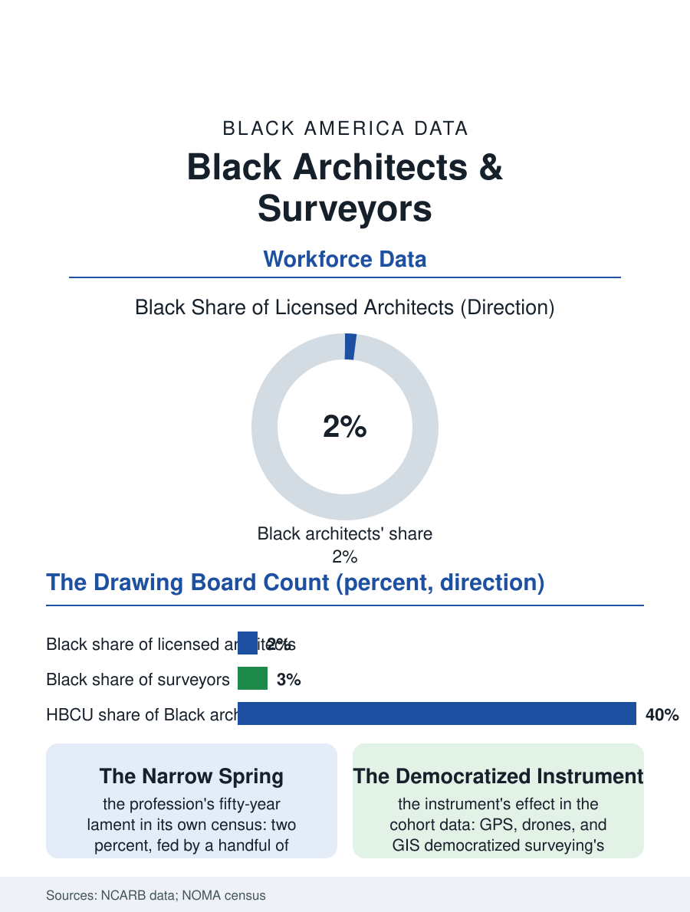

Black Employment
Two Percent of the Drawing Board: Black Architects and Surveyors
Two percent of architects, the lowest share in this atlas, designing a built environment their absence is measured in, lot line by lot line. The drawing board file.

Architects design the built environment and surveyors draw its legal lines, and both professions count Black practitioners in the low single digits, architecture's roughly two percent of licensed architects being among the lowest shares of any profession in this atlas, a figure the profession's own organization has tracked, and lamented, for fifty years. This article reads the architects and surveyors file.
Two Percent of the Drawing Board
The architecture pipeline's leaks are the file's mapped terrain: the accredited degree's cost and length, the studio culture's economics, the unpaid and low-paid internship years of the licensure path, the examination sequence's expense, each stage filtering by the wealth file in the pattern of the credential professions, with the profession's own studies adding the cultural filters, the canon whose exemplars are not Black, the crit room's judgments whose standards the students experience as native taste. The HBCU architecture programs, a handful of accredited schools, produce a disproportionate share of the Black profession from their small enrollments, the pipeline's narrow spring, and the National Organization of Minority Architects, founded in the profession's exclusion era, functions as the guild, its census the file's source of first resort. The practice's structure then sorts the survivors: Black architects concentrate in the public and institutional sector firms and in their own small practices, the corporate and design-star tiers thinnest, the ownership file's few substantial Black firms being the profession's celebrated exceptions, their portfolios, the museums and memorials of Black subjects among them, carrying a symbolic weight in the culture the commission counts cannot. The preservation field deserves its line in this file: the architects who document and restore the Black built heritage, the Rosenwald schools, the Green Book sites, the historic churches, practice a specialty whose commissions come from the heritage economy and whose practitioners are disproportionately the profession's Black members, doing the archive's work with the drawing board's tools. The federal and state historic tax credit projects that finance much of that restoration require the licensed stamp as surely as any tower does, binding the heritage's survival to the same thin pipeline the rest of the built environment draws from.
Surveyors: The Line Drawers
Surveying, architecture's older and earthier sibling, holds the deed's physical truth: the surveyor retraces the boundaries the land files argue about, and the profession's Black practitioners, similarly few, carry a distinctive historical charge, since the profession's founding American generation includes the Black surveyor of the federal city's design team, whose almanacs and whose survey work on the District's boundary are the profession's own origin documents. The modern survey workforce in the licensing data is older and more rural than architecture's, its Black share low and its pipeline running through the technician and party chief ranks rather than the university, the field crew's ladder being the trade's own, and the licensure's education requirements, raised by the states in the current era, press the ladder's lower rungs in the pattern the credential files record across the trades. The geospatial transformation, the GPS and the drone and the GIS database, is rebuilding the profession's technical base in the current decade, and the new entrants through the geospatial programs, including the HBCU and community college programs the workforce agencies fund, post the file's most diverse cohorts, the instrument's democratization doing what the profession's exhortations did not.
Designing the Record
The architects file closes on the work's visibility, because alone among the professions in this section, its product is the public's daily landscape: the courthouse, the school, the museum, the housing, stand for a century bearing their designers' choices, and the commission file's question, who designs Black America's public rooms, answers itself in the procurement data, overwhelmingly not the two percent. The corrective instruments are the file's close: the design competitions' outreach, the public clients' firm diversity goals, the memorial and museum commissions that have, in the current era, deliberately sought the Black architect's hand for the culture's own monuments, producing the profession's defining recent works. The licensure counts change slowly, cohort by cohort. The file's last entry is the drawing board's own arithmetic: a profession of a hundred thousand licensees that is two percent Black is missing, by the population's share, some ten thousand architects, ten thousand practices' worth of the community's own rooms designed by its own, and the surveyor's chain, stretched along the boundaries the missing architects' clients own, measures the same absence in the field, one lot line at a time.
More in Black Employment
The Black Unemployment Rate: The Two-to-One Pattern
Black unemployment runs at roughly twice the White rate — 5.5 percent against 3.3 percent in annual averages — a ratio stable across five decades of federal data. How it is measured and why it persists.
Black Median Weekly Earnings: The 80-Cent Ratio
Black full-time workers earn a median of about $900 a week — roughly 80 cents for every dollar White workers earn. The BLS earnings data by group, gender, and occupation.
Black Labor Force Participation: Working at National Rates
Black labor force participation runs at roughly the national rate — and Black women participate at higher rates than White women. The BLS participation data.
Source: National Council of Architectural Registration Boards licensure data; National Organization of Minority Architects census; Bureau of Labor Statistics occupational data.